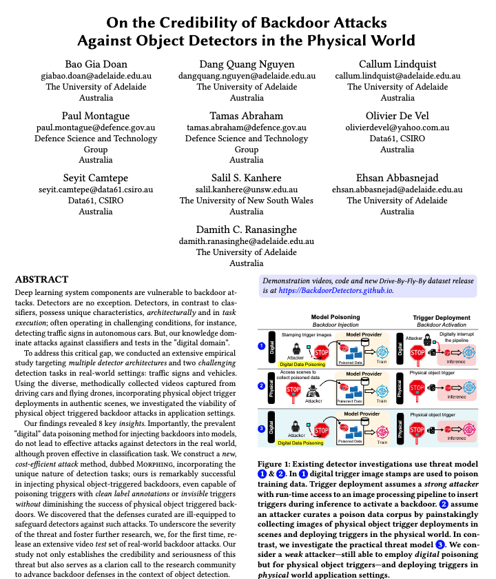

On the Credibility of Backdoor Attacks Against Object Detectors in the Physical World

|

|
 |

|
|---|---|---|---|
|
Demos |
Dataset |
Research Paper |
Code |
If you use this dataset, please cite us as follows
Bao Gia Doan, Dang Quang Nguyen, Callum Lindquist, Paul Montague, Tamas Abraham, Olivier De Vel, Seyit Camtepe, Salil S. Kanhere, Ehsan Abbasnejad, and Damith C. Ranasinghe. "On the Credibility of Backdoor Attacks Against Object Detectors in the Physical World," In Annual Computer Security Applications Conference (ACSAC), 2024.
BibTeX
@inproceedings{doan2024physical,
title={On the Credibility of Backdoor Attacks Against Object Detectors in the Physical World}, author={Bao Gia Doan, Dang Quang Nguyen, Callum Lindquist, Paul Montague, Tamas Abraham, Olivier De Vel, Seyit Camtepe, Salil S. Kanhere, Ehsan Abbasnejad, and Damith C. Ranasinghe}, year = {2024}, booktitle = {Proceedings of the Annual Computer Security Applications Conference {ACSAC}}, location = {Waikiki, Hawaii, USA}}
@inproceedings{doan2024physical, title={On the Credibility of Backdoor Attacks Against Object Detectors in the Physical World}, author={Bao Gia Doan, Dang Quang Nguyen, Callum Lindquist, Paul Montague, Tamas Abraham, Olivier De Vel, Seyit Camtepe, Salil S. Kanhere, Ehsan Abbasnejad, and Damith C. Ranasinghe}, year = {2024}, booktitle = {Proceedings of the Annual Computer Security Applications Conference {ACSAC}}, location = {Waikiki, Hawaii, USA}